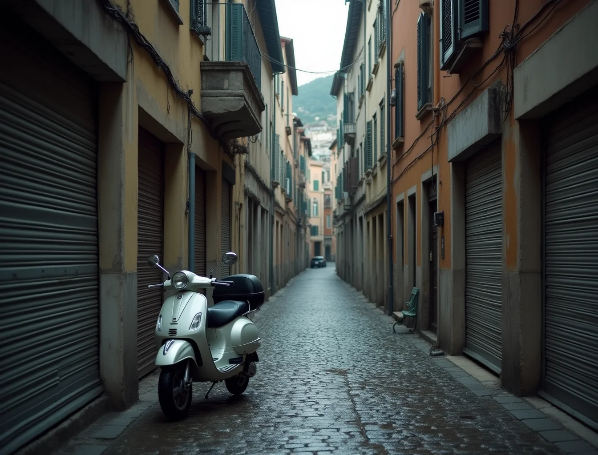
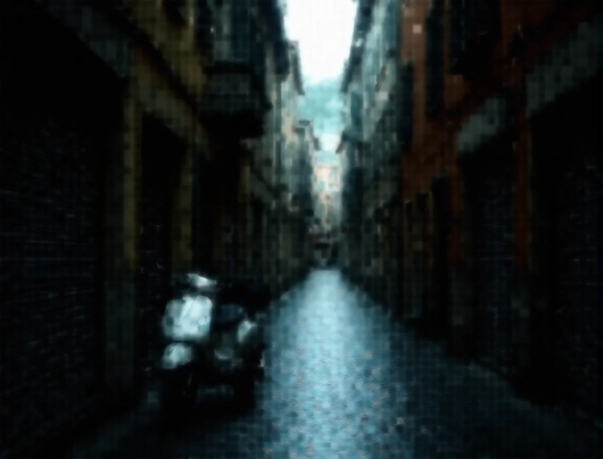

TaDaMoo /ta·da·mù/ — due prestiti dichiarati. «Ta-Da!», la sillaba del prestigiatore nell'istante esatto in cui il velo cade; e «To Da Moon», lo slancio di chi parte per la Luna a cavallo di una palla di cannone, alla maniera del Barone di Münchhausen: il viaggio impossibile, intrapreso comunque, riuscito per eccesso di convinzione. Quel che segue è il numero completo — dieci svelamenti, un solo palco.
Ta-Da! Nº 01 · Check pre-volo
La nuvola più affidabile
è il tuo case.
Le AI in cloud sono ottime inquiline: pagano poco, leggono la tua posta e ogni tanto cambiano la serratura. TaDaMoo abita da te. Ciò che crei non attraversa nessun server, non scade a fine mese, e nessun moderatore d'oltreoceano decide cosa può dipingere un adulto in casa propria.
Ta-Da! Nº 02 · Immagini
Ogni immagine che sai descrivere
esiste già. Va solo sviluppata.
Tre motori in camera oscura — FLUX, Z-Image, Ernie — e nessun rullino da finire. Qui sotto, la stessa strada prima e dopo una frase: trascina il confine e guarda piovere al contrario.

PRIMA · PIOGGIA
DOPO · FESTA DEI LIMONITa-Da! Nº 03 · Video
La cinepresa è un'opinione.
Godard sosteneva che il cinema è la verità ventiquattro volte al secondo. LTX-2 la fabbrica in casa: piani sequenza senza limite di durata, scene rigirate al millimetro, ritratti che cantano. Il set non chiude mai — e non fattura mai.
Ta-Da! Nº 04 · Musica
L'orchestra è nel case,
già accordata.
Canzoni con voce e testo, strumentali da falò, un rumorista che deduce i suoni guardando i fotogrammi, videoclip montati sul battere. L'estate ha bisogno di una colonna sonora: dettale il tema.
Ta-Da! Nº 05 · Voce
Trenta secondi di voce,
un cast infinito.
La sintesi recita — pause, sorrisi e sospiri annotati a copione. E con trenta secondi di campione la tua voce impara battute che non hai mai registrato. Un cast completo, nessuna sala di doppiaggio.
Ta-Da! Nº 06 · Cinema Studio
Dalla logline ai titoli di coda,
senza passare dal produttore.
Scrivi una riga. Il Cinema Studio scrittura i personaggi, costruisce i set, gira, doppia, musica e monta — lasciandoti la poltrona del regista e l'ultima parola. Per le sere di pigrizia c'è il quadrifoglio: un click, un film.
Ta-Da! Nº 07 · Officina 3D
La scultura,
senza il marmo per terra.
Una fotografia entra, una mesh PBR esce. Poi scheletro e pelle automatici, e il movimento lo rubi a un video o alla tua webcam. Gli oblò qui sotto contengono pezzi veri usciti dall'officina: ruotali.
Ta-Da! Nº 08 · Mondi 3D
I luoghi che dipingi
hanno una porta.
Una foto diventa un luogo: profondità vera, muri veri, scale che salgono davvero. Il telescopio è già puntato — entra e cammina: W A S D, il mouse è lo sguardo.
Ta-Da! Nº 09 · Il tuo stile
L'AI ha talento.
Ora può avere il tuo.
Cinque foto del tuo personaggio o del tuo tratto: il wizard costruisce il dataset, allena una LoRA per foto e una per video, e da quel momento il modello parla con il tuo accento. Lo stile non si affitta: si possiede.
Ta-Da! Nº 10 · Sala macchine
Sala macchine
con maggiordomo.
Migliaia di modelli su Civitai e Hugging Face: un link, un drag-drop, e sono in libreria. TaDaMoo riconosce l'architettura, misura la VRAM e apparecchia la combinazione giusta, semaforo alla mano. Il maggiordomo consiglia; il volante resta tuo: override manuale su tutto.
Ta-Da! · Allunaggio
384.400 km.
Un solo biglietto.
Il Barone partì a cavallo di una palla di cannone e nessuno gli chiese l'abbonamento. Tutto quello che hai attraversato — immagini, video, musica, voce, cinema, 3D, mondi, LoRA — vive in un'unica app, sul tuo computer, per sempre.
- Tutte le funzioni, nessun modulo venduto a parte
- Edizioni SFW · NSFW · Studio incluse
- Aggiornamenti e nuove versioni a vita
- 100% locale: privacy per architettura, zero abbonamenti
- Installer selettivo: scarichi solo i pesi che ti servono